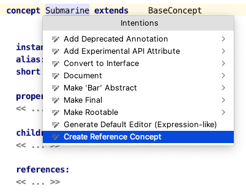
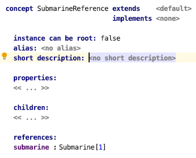

A dedicated intention can create a reference concept for you instantly:

This creates a new concept that holds a reference to the current concept. It is as easy as that to allow references to your concept.
